Matrix Functions¶
This library is focused on the computation of matrix-function [3] vector products
(1)¶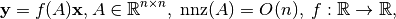
for large and sparse matrices in a distributed setting. Matrix functions are ubiquitous in models for applied sciences. They are involved in the solution of ordinary, partial, and fractional differential equations, systems of coupled differential equations, hybrid differential-algebraic problems, equilibrium problems, measures of complex networks, and many others.
To perform the computation in (1), we consider here two
main approaches, the first one makes use of a definition based on the Cauchy integral
for a matrix function: given a closed contour lying in the region of
analyticity of the function 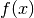 and containing the spectrum of  ,
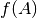 can be defined as
,
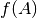 can be defined as
(2)¶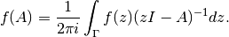
By applying a quadrature formula on  points to (2),
with weights 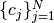 and nodes 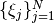,
it is possible to approximate (1) as
points to (2),
with weights 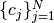 and nodes 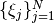,
it is possible to approximate (1) as
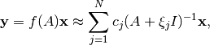
that is then computationally equivalent to the solution of linear
systems with the same right-hand side.
The second approach to problem (1) resides instead on the
use of projection algorithm. Specifically, we suppose having two  -th
dimensional subspaces and 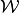 spanned by the
column of the matrices 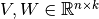. Then, problem
(1) can be projected and approximated on the two subspaces
by doing
-th
dimensional subspaces and 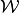 spanned by the
column of the matrices 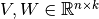. Then, problem
(1) can be projected and approximated on the two subspaces
by doing
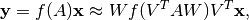
where now 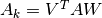 is a small matrix of size 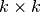, to which we can apply many specific algorithms for the particular choice of , [3], or again a quadrature formula.
The PSFUN Library¶
The recent developments on softwares for sparse linear algebra have been made essential for a wide variety of scientific applications. Specifically, they have been dedicated to the construction of of massively parallel sparse solvers for a particular matrix function 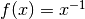, i.e., for the solution of large and sparse linear system. A computational framework that lies at the core of pretty much all multi-physics and multi-scale simulations.
With this library, we try to face the analogous challenge of computing matrix-function vector products for more general functions than the inverse.
The library described here is substantially based on the parallel BLAS feature for sparse matrices made available by the PSBLAS library, and is geared towards the possibility of running on machines with thousands of high-performance cores, and is divided in three main modules,
- Serial module:
this module implements (or interfaces) the computation of , 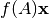 for matrices of small-size that can be handled in a sequential way,
- Krylov module:
this module implements distributed Krylov based methods for the reduction of problem (1) to the solution of problems of small dimensions,
- Quadrature module:
this module implements the approach in (2) by implementing different quadrature formulas.
{kind=link}
How To Install¶
The first step to install the PSFUN is to obtain and install the PSBLAS library from psctoolkit. All the relevant information can be found there.
The actual version of the library works with the development version of PSBLAS, this can be done obtained via GitHub by doing
git clone https://github.com/sfilippone/psblas3.git
cd psblas3
./configure -with-<stuff>=... -prefix=/path/to/psblas
make -j
make install
in which the various -with-<stuff>=... options can be read from the
output of the ./configure -h, again please refer to the original
documentation of PSBLAS for all the relevant information.
Auxiliary packages that can be used to with the library are:
the package for the computation of
-functions from [5], that can be obtained from the ACM website.
To build the documentation Sphinx and Sphinx-Fortran (with the relevant dependencies) are needed. Building the documentation is optional, and can be skipped during the configuration phase. In every case a copy of the docs is included with the code.
After having installed all the dependencies, and the auxiliary packages the PSFUN
library can be installed via ccmake (Version 3.15), by setting
the position of PSBLAS, and all the auxiliary packages.
git clone https://github.com/Cirdans-Home/psfun.git
mkdir build
cd build
ccmake ../psfun/
make
make install